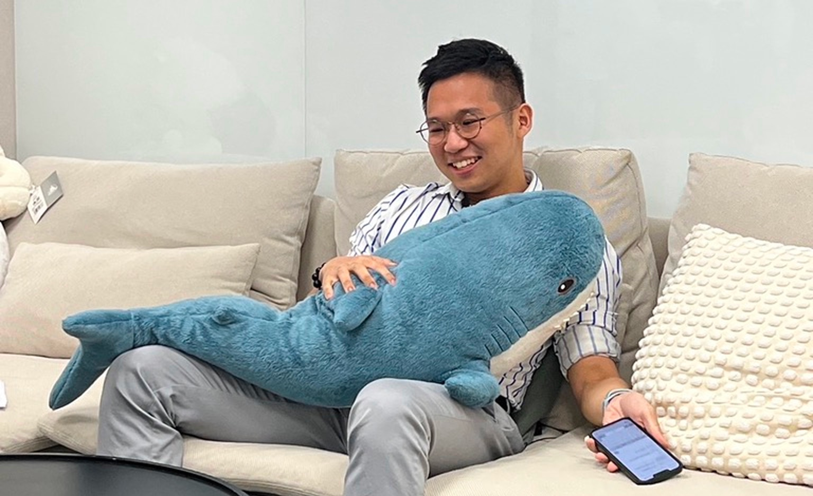
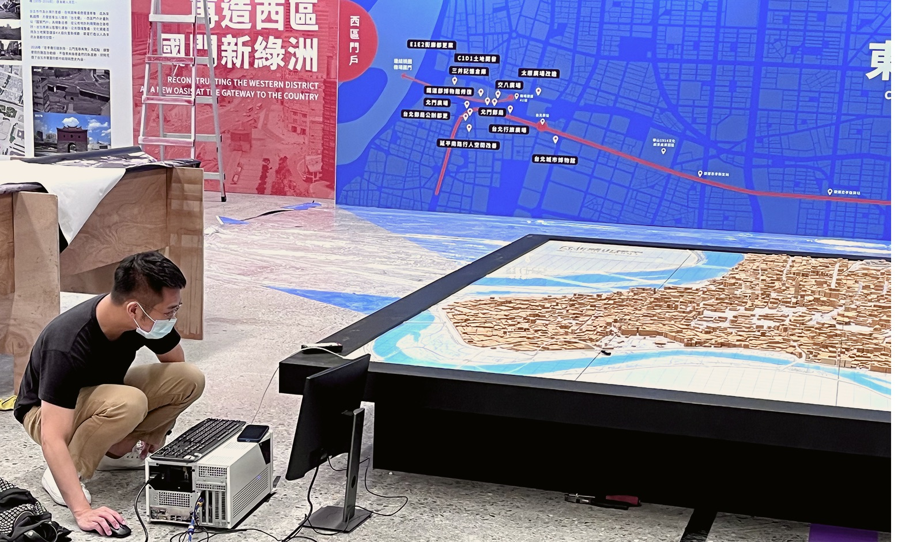
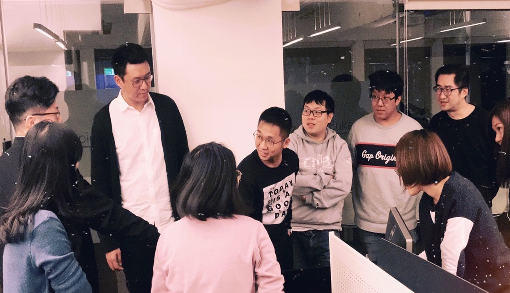

Reduce effort to understand
Hierarchy and language should help recruiters find the project, role, decision, and outcome quickly.
DESIGN SYSTEM / 00
This page documents the visual foundations and reusable UI already used across the portfolio. Changes should be tested here first, then inherited by the site through the same tokens and component classes.
01
Hierarchy and language should help recruiters find the project, role, decision, and outcome quickly.
Color, glass, and motion add character while keeping the work and its reasoning at the center.
Small hover, scroll, and expansion behaviors reveal personality without blocking the main path.
02
Use neutral colors for most of the interface. Deep green is the shared interactive accent; the soft spectrum supports identity and project imagery without replacing it.
--color-ink#1D211F--color-canvas#FBFBF9--color-surface#F1F1EE--color-muted#5f655f--color-accent#0F7C6E--color-peach#F5CDBF--color-lilac#D9CDF8--color-sky#C8E4F1--color-sage#D9EBCF--color-butter#F2E7AE03
Aspekta carries the interface and editorial hierarchy at its natural spacing. Display and headings use no negative tracking; Georgia is reserved for short expressive accents and selected metrics.
Display / HeroAspekta 580 · Natural spacingMaking complex products easier to use
Display / SectionAspekta 580 · Natural spacingSelected work
Heading / CardAspekta 580 · Natural spacingHelping customers understand spending
Body / LargeAspekta 400 · 155%I work across digital banking and AI, helping people understand complex data and workflows.
LabelAspekta 500 · Uppercase01 / SELECTED WORK
AccentGeorgia ItalicClear experiences
04
48162432486480
Text and small state changes
Buttons, menu, hover feedback
Hero object and larger movement
04a

hero-portrait · Approved artwork
Transparent charcoal SVG. Preserve the glass card’s labels and tilt. Header displays Alfie Liu; Dock provides Work, About, and Resume.
The headline and introduction stream in once. The headline then cycles complex, financial, and AI-powered every 3.6 seconds while “easier to use” keeps a one-time green highlight. The status dot pulses while the Hero is visible.
Offscreen and background motion pauses. Reduced-motion mode shows “Making complex products easier to use” without the word cycle or pulse.
View the live Home Hero ↗05
06a



07

A browser extension I designed and developed to help an internal design team find, customize, and reuse structured AI prompts.
View case study →.png)
Interactive installations that visitors explore through touch and gesture.
View case study →08

09
Example: “Primary project card / split / hover” instead of “the large box on the homepage.”
Global color, spacing, radius, type, and motion changes belong in shared tokens.
The component page reveals consistency; the portfolio confirms that the rule works with real content.
If a project needs a unique pattern, document why it cannot use an existing variant.
Stable is safe to reuse. Review needs a decision. Experimental can change after prototype feedback.